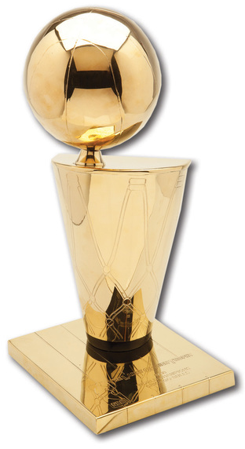

Introduction
Michael Jeffrey Jordan (born February 17, 1963), also known by his initials, MJ, is an American retired professional basketball player. He is also a businessman, and principal owner and chairman of the Charlotte Hornets. Jordan played 15 seasons in the National Basketball Association (NBA) for the Chicago Bulls and Washington Wizards. His biography on the NBA website states: "By acclamation, Michael Jordan is the greatest basketball player of all time." Jordan was one of the most effectively marketed athletes of his generation and was considered instrumental in popularizing the NBA around the world in the 1980s and 1990s
Awards and honors
-
Two-time Naismith Memorial Basketball Hall of Fame
- class of 2009 – individual
- class of 2010 – as a member of the "Dream Team"
- U.S. Olympic Hall of Fame – class of 2009 (as a member of the "Dream Team")
- FIBA Hall of Fame – class of 2015
- Two-time Olympic Gold Medal winner – 1984, 1992
- Six-time NBA champion
- Six-time NBA Finals MVP
- Five-time NBA MVP
- 10-time NBA scoring leader (1987–1993, 1996–1998)
- 14-time NBA All-Star
- Three-time NBA All-Star Game MVP
- 11-time All-NBA
- Nine-time All-Defensive First Team
- Two-time NBA Slam Dunk Contest champion – 1987, 1988
- NBA Rookie of the Year – 1984–85
- NBA Defensive Player of the Year – 1987–88
- 1985 IBM Award winner
- NCAA national championship – University of North Carolina at Chapel Hill: 1981–82
- ACC Freshman of the Year – 1981–82
